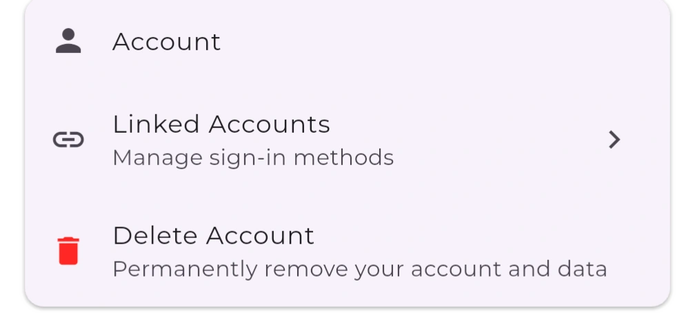

Account Deletion
Last updated: March 2025
How can I delete my account?
Yarn Stasher lets you delete your account directly inside the app. Deletion is permanent and happens immediately, so make sure you export anything you need before starting.
How to Delete Your Account
- Open the Yarn Stasher app and log in.
- Go to Settings → Account.
- Scroll to the bottom and tap Delete account.
- When the confirmation prompt appears, review the warning and tap Delete account again to confirm.
You'll see an on-screen confirmation right away. The account and associated data are removed instantly.
Data Removed Immediately
- Profile information (email, display name, avatar)
- Saved projects, stash items, notes, and preferences
- Any in-app purchases tied to your profile
- Support conversations linked to your account
Data We Temporarily Retain
A non-reversible hash of your email address, kept solely to prevent fraudulent re-signups and comply with abuse monitoring. This hash cannot be used to recreate your email.
Need Help?
If you can't access the app or the button isn't working, email support@yarnstasher.com from your registered address with the subject "Delete my Yarn Stasher account," and we'll process it manually.
